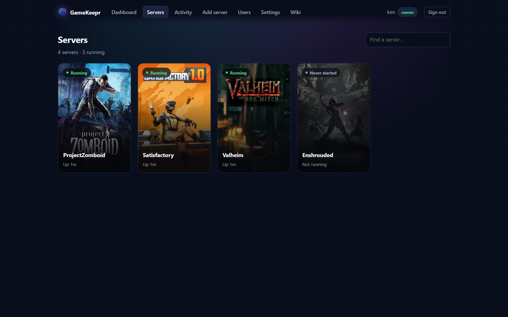

Servers and restarting

The Servers page shows every server you may see, running ones first. The search box filters by name. Hovering a card shows its quick actions: operators get a pencil to rename the server (presentation only — nothing technical changes), the owner also gets a bin to delete it (see Installing game servers for exactly what a delete does and does not touch).
How do I get in?
Open a server and its overview starts with the Joining card: the public address and port, the server's name, the world, and — when the game has one — the password, in the clear. That is deliberate: the password is the game's door key, and the people who can open this page are exactly the people it was set for. Hand a friend the card's contents and they are in.
What the status means
| Status | Meaning |
|---|---|
| Running | The container is up. If the game publishes player counts, they show on the card. |
| Stopped | Deliberately off. Members cannot start a stopped server — that is operator work. |
| Never started | Installed but not yet started for the first time. |
| Restarting… | Someone pressed the button; the card shows live progress and who started it. |
What a restart actually does
For most servers here, a restart is also the update: the container checks for a new game version on the way up. GameKeepr then verifies the result in two stages — first that the container is back, then that the game itself answers. A running container with a dead game inside is precisely the failure this catches.
Three outcomes land in the activity feed:
- Success — the game answered. Done.
- Unconfirmed — the container came back but the game did not answer in the time this game normally needs. Usually it is simply still loading (a modded server that fetches its mods on start can take a long while); check again in a few minutes before assuming the worst.
- Failed — the restart itself did not complete. The message says why.
The cooldown
After a restart, the button shows a countdown. That is not bureaucracy: the server is most likely still loading its world, and a second restart now would interrupt it. Operators may override the cooldown when they know better; the confirmation tells them what they are interrupting.
Players online
If people are online, the confirmation dialog says so before you restart — they will be disconnected and can rejoin once the server is back. Warn them in-game or on Discord first; the restart itself takes a minute or two.